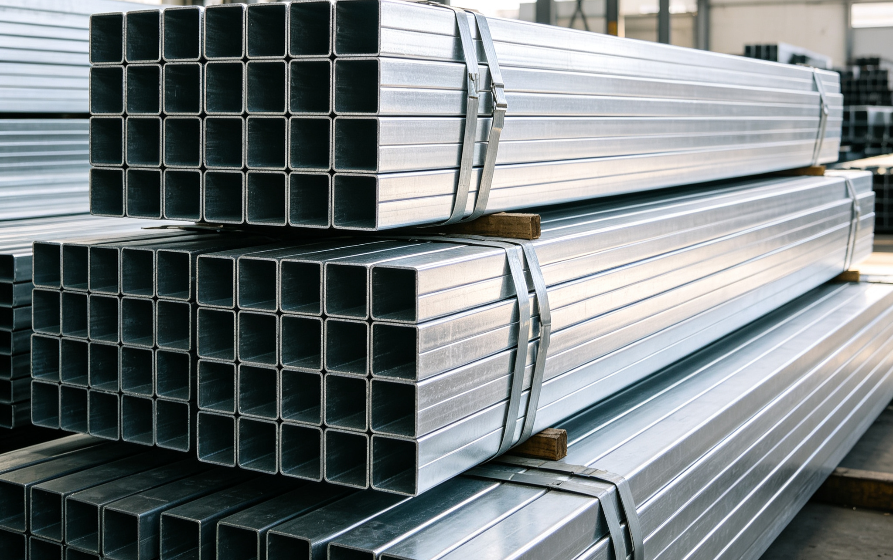
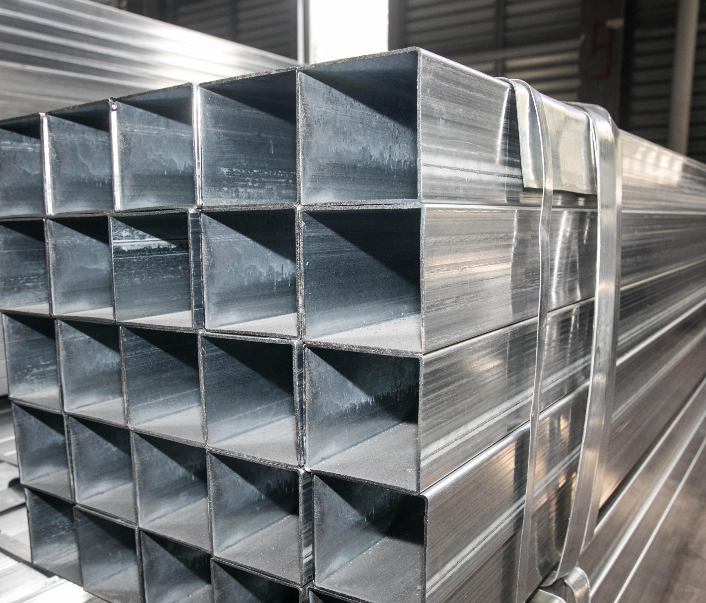
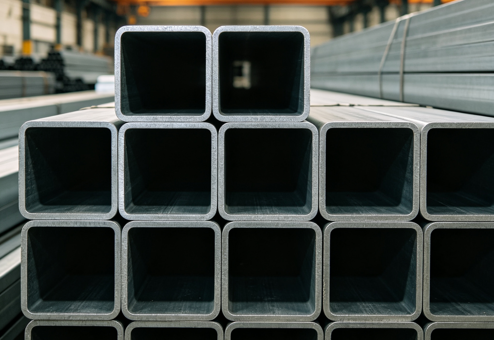
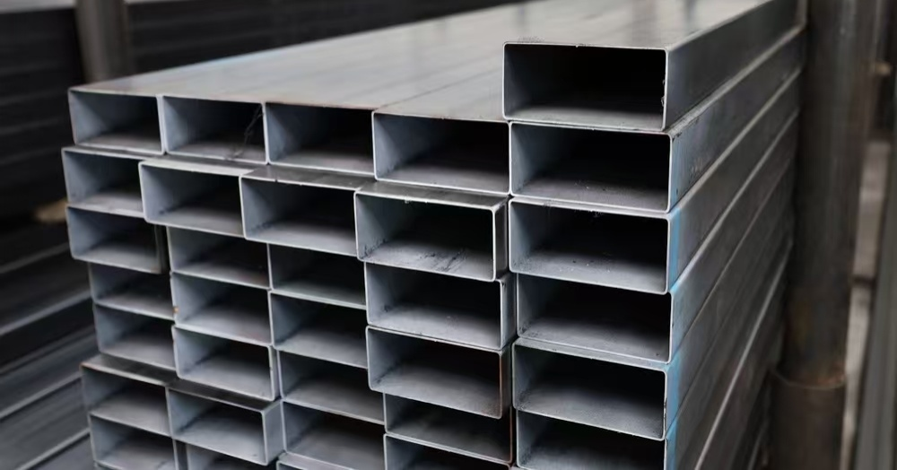
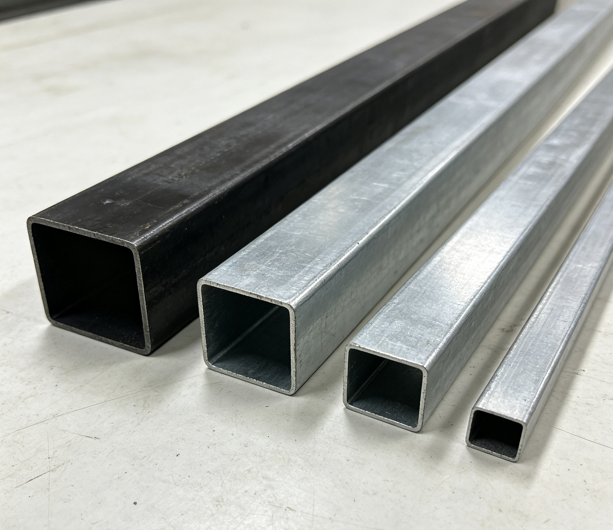
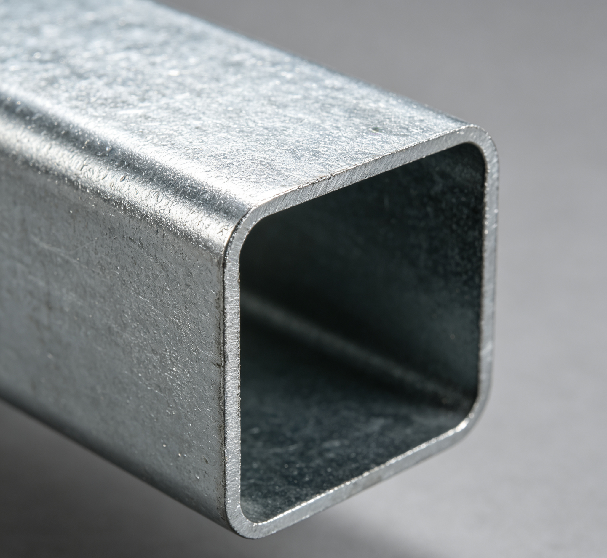
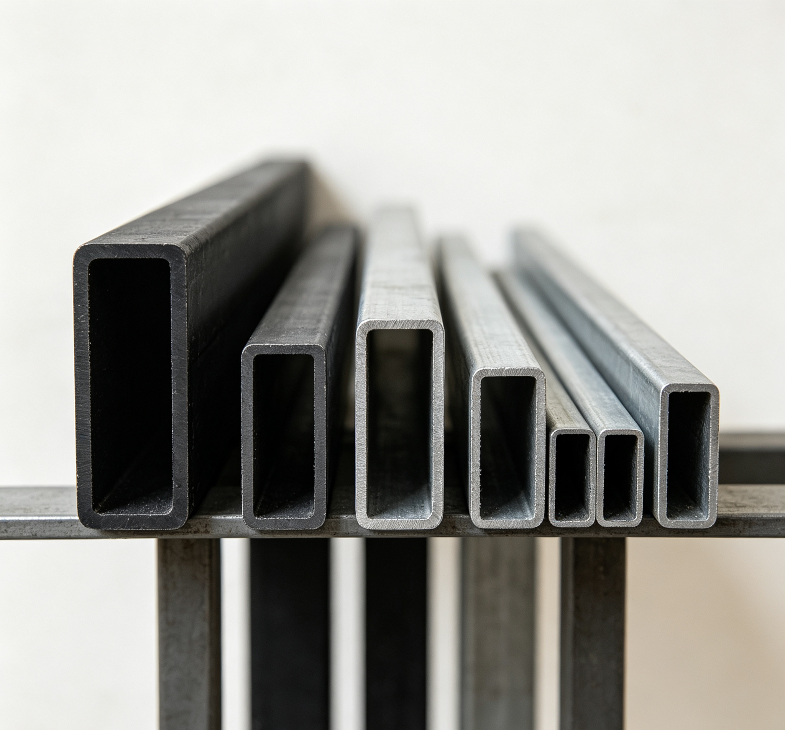
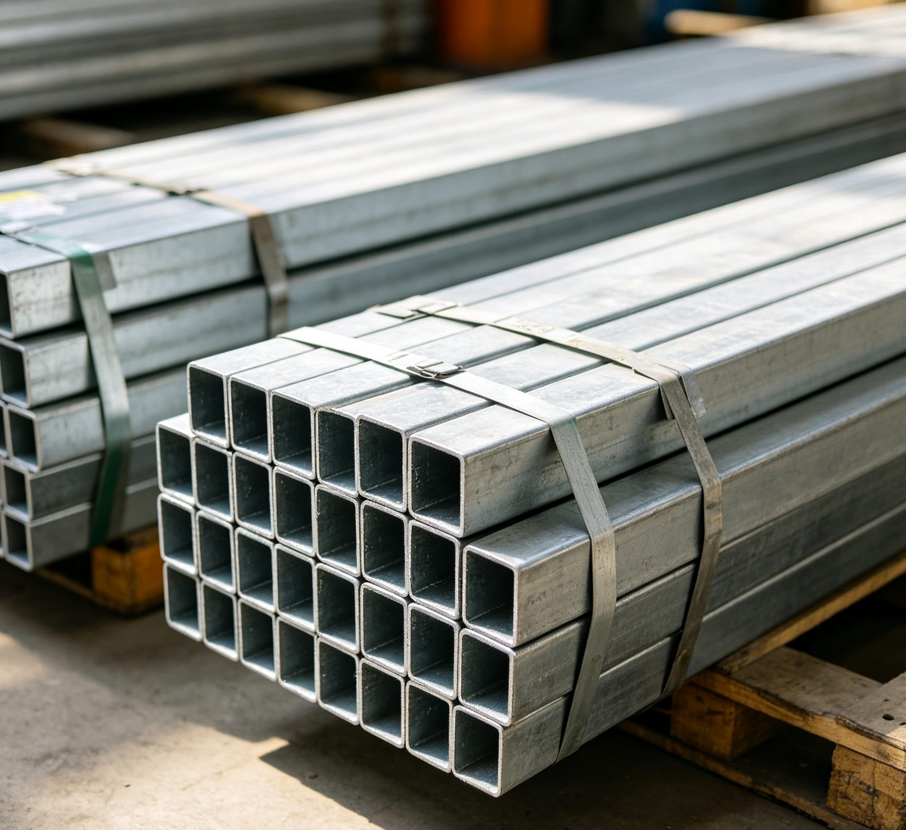
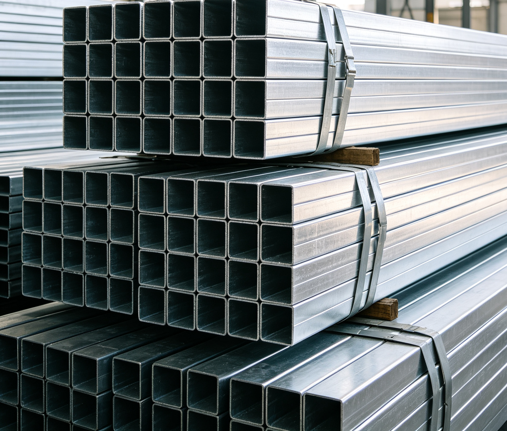

Напрямую с производственных площадок — без посредников и лишних наценок
Мы — российская импортная компания. Поставляем металлопрокат из Китая напрямую с производственных площадок, без посредников и лишних наценок. Работаем с проверенными заводами, имеющими сертификаты ISO и многолетний опыт поставок.
Для вас — легальный ввоз, полный пакет документов и сопровождение сделки от запроса до выгрузки на объекте.





Срок изготовления: от 30 до 100 дней. Возможна срочная обработка.


